Different users find different images generated for the same prompt desirable. This gives rise to personalized image generation which involves creating images aligned with an individual’s visual preference. Current generative models are, however, unpersonalized, as they are tuned to produce outputs that appeal to a broad audience. Using them to generate images aligned with individual users relies on iterative manual prompt engineering by the user which is inefficient and undesirable.
We propose to personalize the image generation process by first capturing the generic preferences of the user in a one-time process by inviting them to comment on a small selection of images, explaining why they like or dislike each. Based on these comments, we infer a user’s structured liked and disliked visual attributes, i.e., their visual preference, using a large language model. These attributes are used to guide a text-to-image model toward producing images that are tuned towards the individual user’s visual preference. Through a series of user studies and large language model guided evaluations, we demonstrate that the proposed method results in generations that are well aligned with individual users’ visual preferences.
Our code and model weights are open sourced at https://viper.epfl.ch.
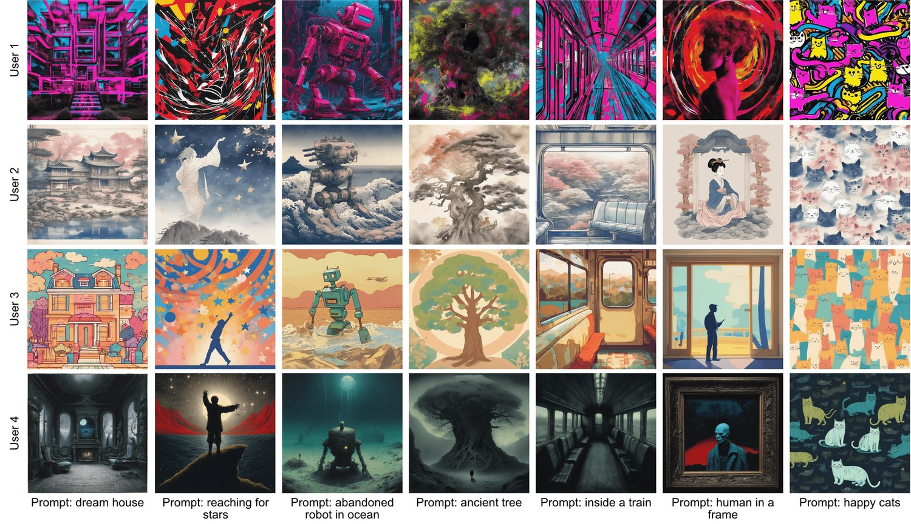
Text-to-image generative models [28, 12] have demonstrated the ability to produce high-fidelity images and exhibit remarkable generalization abilities. This capability has sparked considerable interest regarding their potential applications which include image editing [13, 25, 2, 23], style transfer [9, 3, 30], and generating training data [10, 31, 22, 41].
These applications generally require guiding the generative model towards certain desired outputs. In this work, we are interested in guiding the generations toward an individual’s preferences in images, or personalization.
Current methods for producing personally desirable images require the users to iteratively refine their prompts until they achieve their preferred outcomes or incorporate sparse feedback. Some forms of this feedback include binary reactions [36], providing images that the individual likes or dislikes [33, 7, 29], or ranking a given set of images [35].
We propose to utilize the individuals’ comments on a given set of images for capturing their generic visual preferences. This allows them to express why they like or dislike certain images. We will demonstrate, through user studies, that this increased level of expressivity results in generations better aligned with individual preferences. To incorporate this feedback into a text-to-image model like Stable Diffusion [28, 26], we first transform these comments into a structured representation containing visual attributes, i.e., a set of features they like or dislike in images, e.g., surrealism, rough brushstrokes, monochromatic, etc. We demonstrate that we can condition Stable Diffusion on these visual preferences without any additional fine-tuning. We call our method Visual Personalization of Generative Models via Individual Preference Learning, or ViPer for short.
Our user studies show that users prefer our method over other baselines most of the time. They also strongly favor personalized results tailored to their preferences compared to non-personalized results or results from other users.
Aligning image generative models with general human preferences. Generative models such as Stable Diffusion [28] are trained on images from the internet. Thus, their generations may reflect the artifacts of such data e.g., unusual object poses. This is not ideal if the goal is to generate aesthetically pleasing images e.g., high quality images where the object is centered and unoccluded. To align image generative models with these general goals, as opposed to an individual’s preference, these models are often tuned with reinforcement learning from human feedback (RLHF) [37, 4, 27] to maximize scoring metrics [39, 14, 40, 32] and improve image quality. [8, 38] optimize input prompts instead to achieve the same. While these methods enhance the quality of results by making them aesthetically aligned with general human preferences, ViPer focuses on an individual’s preferences and generates personalized images.
Aligning image generative models with individual’s preferences. Personalization methods seek to adapt generative models to specific concepts, such as styles, by leveraging feedback or direct inputs from individuals. Popular examples include [7] and [29], which aim to learn a representative token for desired concepts, and guidance methods [34, 6, 11, 18], which steer sampling towards images that satisfy a desired objective by adding an auxiliary term to the score function. [33] learns a new style by fine-tuning a few trainable parameters from a reference image and improving the quality via iterative training with either human or automated feedback while [36] is a training-free method that incorporates iterative feedback into the generation process of text-to-image models. These methods mostly rely on users to express their preference for a set of images by simply liking or disliking them, or by providing images themselves. In contrast, ViPer allows users to express their detailed opinions about a given set of images to generate personalized results. This is a one-time process and users aren’t required to provide further feedback. In section 4.2, we show that the additional flexibility and expressivity of comments result in generations more aligned with users’ preferences.
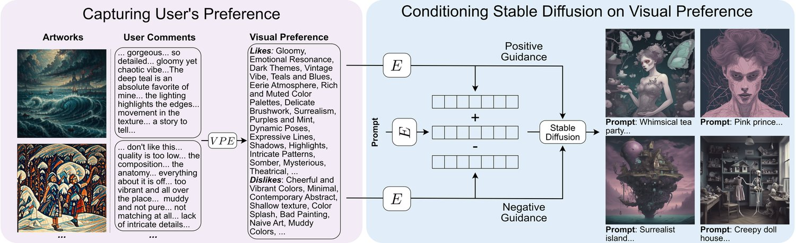
We propose a method to align text-to-image models with an individual’s visual preferences. In section 3.1, we propose an approach for computing a signal that captures an individual’s preferences. In section 3.2, we demonstrate how we can use this signal to adapt a generative model to generate personalized images. Finally, in section 3.3, we introduce a proxy metric to evaluate how well-aligned the personalized images are with the individuals’ preferences. See fig. 2 for an overview of our method.
Current methods for capturing preferences include utilizing signals such as whether an individual likes or dislikes a set of images [36], or how they rank each image within the set [35], while some require users to provide a set of representative images [7, 29, 33]. However, these signals are sparse and may only cover some aspects of an individual’s preferences.
Furthermore, our preferences and even the images themselves can be complex, making it challenging for these signals to fully capture the intricacies of an individual’s preferences. Take for example someone who likes cool colors and realistic art and dislikes warm colors and pixel style. In traditional binary choice or ranking methods, when presented with pixel art featuring cool colors, the individual must decide whether they like the image despite the pixel style, or rank how much they like it.
Capturing an individual’s preferences with free-form comments. We propose to use comments on a given set of images to capture an individual’s preferences. To do so, we first generate around 50 images with diverse art features such as style (see the fig. 7 for visuals) and ask individuals to select a random subset to comment on. Note that one can also comment on their own provided set of images if they prefer. Individuals are encouraged to discuss why they like or dislike each selected image, their perception of it, and the emotions it evokes. Importantly, individuals are not bound to any specific writing structure when commenting. They can write as much or as little as they prefer since we utilize a language model to extract structured preferences from their free-form comments. Ideally, these comments are descriptive, covering most of the attributes present in the images that are important to the individual. We show that in this case, comments on as few as eight images are enough to get personalized results (see for examples.)
Converting free-form comments to a structured representation of an individual’s preferences. We propose representing an individual’s visual preferences through a set of attributes across 20 categories such as texture and color palette. Each category contains multiple attributes, e.g.within the texture category, attributes include smoothness, roughness, etc. To obtain this, we instructed several language models e.g., GPT-3.5†† † openai.com, Claude 2.1‡‡ ‡ claude.ai, and Llama 2 to output representative art categories and their corresponding attributes. By aggregating their results, we compiled a total of approximately 500 visual attributes. See page for the complete list.
To transform the free-form comments into visual preferences, we require a dataset that maps comments and individual preferences. Since such data does not exist to our knowledge, we start by creating 5000 agents, or simulated individuals, who are characterized by their liked and disliked visual attributes. Each agent is randomly allocated an average of 50 liked and disliked attributes from the attributes list mentioned above. To ensure diversity, we generate them such that there is a minimum Jaccard distance of 85% between any two agents’ liked and disliked attributes.
Next, we generate comments that each agent would write for various images based on their visual preferences. To keep the comments relevant to visual preferences and informative, we first generate an average of 10 images for each agent, concatenating a random subset of visual attributes they like or dislike in the input prompts. Although the images are still somewhat random since the input prompts are chosen randomly, this set is directly related to each agent’s visual preferences.
To generate the agents’ comments on these images, we instruct GPT-4 [24] to create each agent’s comments based on their visual preferences. Typos and sarcasm are randomly allowed to add diversity and make the results more human-like. This process results in a paired dataset of visual attributes and comments for each agent.
To extract an individual’s visual preference from their comments, we fine-tune IDEFICS2-8b [15, 17], an open-sourced vision-language model, on the agents’ paired dataset. We found this model to work best compared to other open-source vision-language models. We demonstrate the shortcomings of our initial experiments with other models in section A.4. We denote the fine-tuned IDEFICS model as the Visual Preference Extractor, or . Note that the ’s output is not limited to the pre-defined attributes; it can extract attributes mentioned in comments, e.g., recognizing a color mentioned in the comments but not defined in our attribute set.
Instead of converting comments to visual preferences, one might consider directly asking individuals to choose from visual attributes. However, we believe that this process can be tedious due to the large number of attributes (about 500) and certain attributes may be challenging to visualize out-of-context.
In the previous section, we described how we can capture an individual’s visual preference from their comments. Here, we are interested in how we can use these visual preferences to adapt a generative model. In this work, we employ Stable Diffusion [28, 26]. As described previously, each individual’s preferences are described by a set of preferred and disliked attributes, denoted as and respectively. Encoding these preferences using Stable Diffusion’s text encoder, , gives us and . We encode the input prompt, , and modify the resulting embedding, , with and to steer the generations towards the individual’s preferences as follows:
| (1) |
can be tuned by the individual to increase or decrease the ‘level’ of personalization according to their preferences. See fig. 5 for examples. We found in our experiments that ensures that the generations will be faithful to both the input prompt and visual preferences. To guide the process toward the individual’s preferences along with the prompt even further, we also modify the predicted noise by using classifier-free guidance [11, 21]. (see eq. 3). For a given timestep ,
| (2) | ||||
| (3) |
where is Stable Diffusion’s denoising U-Net and is the guidance scale. The changes to the denoising process are shown in algorithm 1.
We proposed a method to generate personalized images. To evaluate them, human evaluations are the gold standard, however, they are expensive and not scalable. In this section, we aim to introduce a proxy measure for evaluating these generations, thereby encouraging further research in this domain.
This proxy measure would indicate how much an individual would like a given image. To obtain this proxy measure, we combine two sources of training data: one from our agents and another from the Pick-a-Pic dataset [14]. The latter contains the binary preferences of human users on a set of generated images. For the former, we employ two approaches to generate training data. Using the agents’ visual preferences, we produce a small set of personalized images for each agent with ViPer. Additionally, we generate personalized prompts with a language model and create images from them using standard Stable Diffusion XL (see section 4.2 and section C.3 for details). This is to ensure that the proxy measure will not be biased toward the generations from ViPer. Thus, for a given entity (agent or human), we either have a set of their personalized images or a set of several generated images that they like. We denote each image from this set for entity as . An image that is disliked or not personalized is denoted as . We denote the set of these image pairs as . We use 5000 sets of image pairs to fine-tune IDEFICS2-8b, denoted by , to output the probability of an individual liking a given image , given a set of their liked and disliked images, , as . We use the cross-entropy loss for training, where is the prediction and is the label i.e., . See fig. 3 for the schematics of a fine-tuning step.
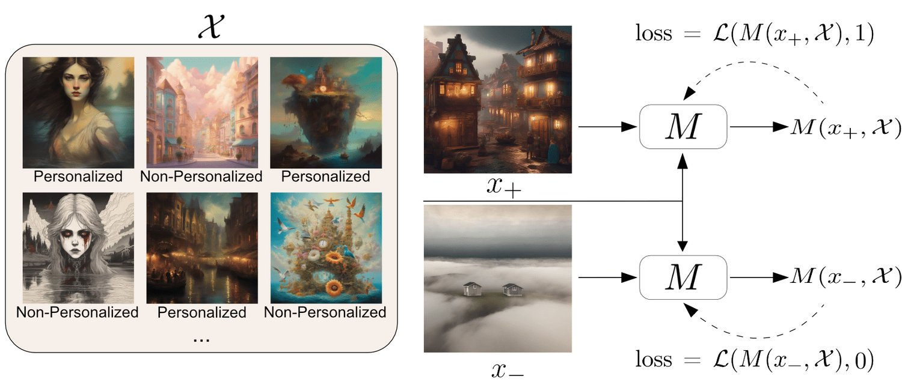
We demonstrate that ViPer is capable of generating images that align with an individual’s preferences (see section 4.1), and when compared to current baselines, it achieves higher levels of user satisfaction (see section 4.2).
Comparing generation across users. In fig. 4, we display personalized outcomes from seven prompts for four users using ViPer. These results highlight each user’s distinct art preferences, underlining that visual taste is more than just liking a single art style or a color palette; rather it’s shaped by various visual attributes based on individual preferences.
User studies. We assess our approach using user tests. We invited twenty users to our study, conducting two types of tests. Each participant was first asked to comment on 8 to 20 images (flexible and dependent on the user’s choice). Each user was then shown eight images generated from the same prompt, where only one of the eight was personalized for them using ViPer. This was then repeated for 15 prompts.
In the first test, the other seven images were created using standard Stable Diffusion XL, without personalization (User’s Pers. vs. No Pers in table 1). Our top-one accuracy here is 86.1%, meaning the user’s most preferred images were overwhelmingly generated from their visual preference, surpassing random chance by 6.89 times.
In the second test, they were generated based on the visual preferences of other users (User’s vs. Other Users’ Pers in table 1). The aim of this test is to showcase how ViPer goes beyond just enhancing general aesthetics and instead focuses on personalization. Our top-one accuracy here is 65.4%, which exceeds random selection by 5.23 times.
The lower accuracy in the second test compared to the first one is because some users have similar preferences. Despite our efforts to address this for the sake of demonstration, users may still favor details in others’ results that weren’t explicitly mentioned in their own comments. We discuss this further in section 5. Our proxy metric’s results closely correlate with actual user tests, demonstrating its alignment with user preferences. Additional ablation studies can be found in the appendix C.
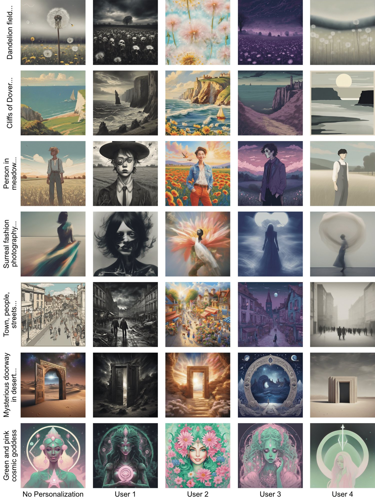
Accuracy User’s Pers. vs. No Pers User’s vs. Other Users’ Pers Users Proxy metric Users Proxy metric Random Top-1 86.1 86.7 65.4 71.6 12.5 Top-2 93.2 95.8 82.2 89.2 25.0 Top-3 98.6 100.0 96.6 98.3 37.5 Top-4 99.0 100.0 99.0 99.2 50.0
Controlling the degree of personalization. Our approach offers flexibility by letting users adjust the personalization level with a simple slider. fig. 5 depicts how personalization increases for one user gradually. As increases from 0 to 1, results become more tailored to user preferences, departing from generic outcomes while keeping the original prompt’s intent.
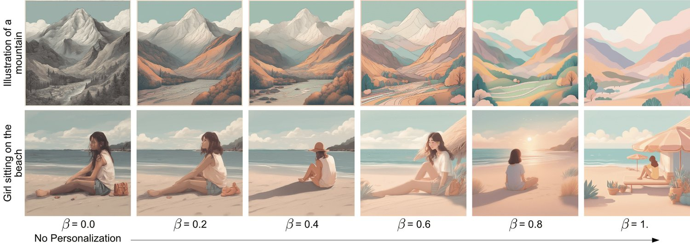
Consistency with input prompts. In our sample runs, results follow the input prompts’ meaning. This is because the influence of visual preference embeddings on the final images can be limited by , ensuring they never outweigh the input prompt embeddings. In fig. 4’s last row, we display the results of a prompt following specified art features. Despite maintaining personalization, our results adhere to the prompt’s characteristics. Additional examples and experiments are provided in section C.4.
Evaluation through identifiability tests. We conduct two experiments to make sure that there is a significant connection between the agents’ preferences and their comments so that is able to extract preferences correctly from user comments.
In the first experiment, which we denote as "Author test" in table 3, we aim to identify the author of a comment given the visual preferences of five agents. We conduct this using 100 random agents, each appearing at least twice as the author. GPT-4 ranks agents by likelihood of being the author and we measure accuracy by whether the true author is among the top predictions.
The second experiment, which we call "VP vs. VP" in table 3, aims to assess how well an agent’s set of comments maintains their original visual preference. To do this, we first use GPT-4 to reconstruct the visual preferences of 50 random agents from all of their comments. Then for each agent, we consider the agent’s reconstructed visual preference (which was generated from the comments), the agent’s original visual preference (which the comments were generated from), and four random agents’ original visual preferences. We instruct GPT-4 to rank the reconstructed visual preference with the original visual preferences based on the likelihood of both belonging to the same agent.
In both experiments, the top-one accuracy exceeds random selection significantly. The accuracy of the second test, VP vs. VP, is overall higher than the first test. This is because the reconstructed visual preferences contain more information than one comment, making the second test easier in general. These results are proof of alignment between our simulated agents’ preferences and their comments, making ’s training data reliable as a source to extract visual preference from comments.
| Accuracy | Author test | VP vs. VP test | Random | ||
|---|---|---|---|---|---|
| Top-1 | 83.4 | 89.9 | 92.4 | 45.8 | 20.0 |
| Top-2 | 89.1 | 98.1 | 96.2 | 72.1 | 40.0 |
| Top-3 | 91.2 | 100.0 | 96.4 | 88.3 | 60.0 |
In this subsection, we compare our approach to existing baselines. We’ll discuss the strengths and weaknesses of these methods and explain the advantages of our approach over them. We evaluate the following baselines and use Stable Diffusion 2 for the experiments:
No personalization: These generations are produced with the input prompts using standard Stable Diffusion.
ZO-RankSGD [35]: Users are required to rank several images in multiple iterations for each prompt. This algorithm converges to a stationary point based on the feedback received. This approach helps us compare our approach to ranking.
FABRIC [36]: For each prompt, users are asked to like/dislike the generated images in multiple steps. The diffusion process is conditioned on this set of liked and disliked feedback images. This method helps us understand which one—binary reactions or comments—is more effective in grasping user preferences.
Textual Inversion [7]: Users provide two sets of liked and disliked images. Textual Inversion generates special tokens for each. Tokens are incorporated into positive and negative prompts. This approach helps determine whether asking a user to provide their preferred and disliked images, or comment on images is better at capturing user preferences.
Fine-tuning Stable Diffusion [7]: We fine-tune Stable Diffusion with one user’s , using the CLIP similarity score to align Stable Diffusion-generated outputs for each user with their to serve as a reward model [40, 4]. The key distinction from ViPer is in the incorporation of visual preferences into Stable Diffusion. This approach demonstrates the effectiveness of using embeddings as shown in eq. 1 and eq. 3.
Prompt Personalization: We instruct a language model to directly personalize prompts, based on the user’s visual preferences extracted from their comments by . The modified prompt is given to standard Stable Diffusion to generate personalized images. The main difference with ViPer lies in how visual preferences are incorporated into Stable Diffusion. Thus, this method demonstrates the efficacy of using embeddings in eq. 1 and eq. 3.
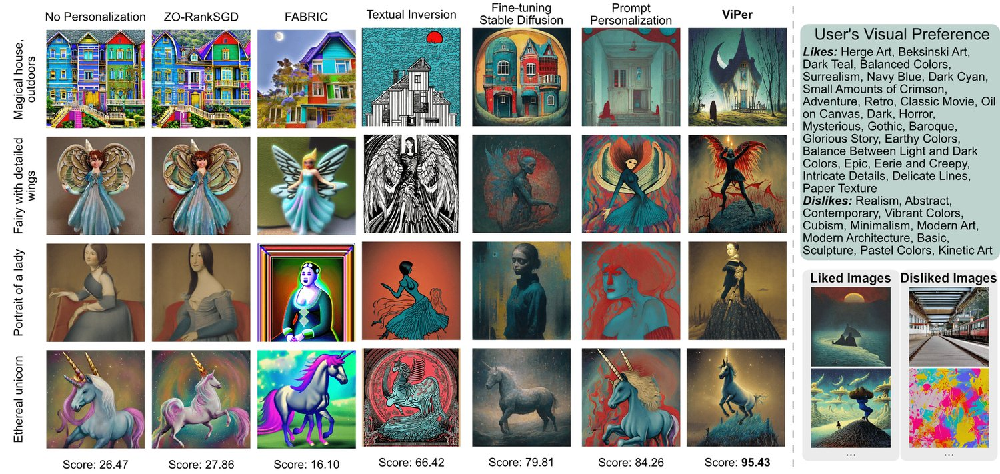
fig. 6 depicts a comparison of personalized generations with these baselines versus ViPer, for a single user. Textual Inversion struggles when the user’s selected images are too diverse. Furthermore, users are not able to provide feedback on their reasons for liking/disliking the input images. This can be seen in column 4 in fig. 6, where the results contain textures and certain color palettes that are too extreme for the user’s taste. It is also challenging for users to provide a set of images that completely represents their preferences.
Prompt Personalization, which is dependent on a language model, may lead to lengthy prompts, parts of visual preferences being disregarded, and can adopt a conversational tone, despite explicit instructions. Additionally, the personalized prompts may also fail to include key concepts from the original prompts (examples in section C.4). The resulting generations can be seen in the fifth column of fig. 6. The results are aligned with the user’s visual preference but overlook the user’s favored attributes like "Retro", "Creepy", and "Horror" due to language models’ inclination towards generating lengthy outputs. Iterative prompt refinement helps, but the computational overhead of using a language model remains a challenge. We provide further examples of these shortcomings in section C.4.
Fine-tuning Stable Diffusion results in personalized but low-quality outputs. Additionally, it is an expensive and time-consuming method because each user needs to fine-tune Stable Diffusion with their .
In our experiments, FABRIC consistently converged towards a more realistic and vibrant style of images. This can be seen in the third column in fig. 6, despite the user’s dislike for "Realism" and "Vibrant Colors". ZO-RankSGD does not deviate much from the unpersonalized results.
Lastly, we use our proxy metric to calculate a personalization score for each of the methods in fig. 6. ViPer has the highest score, followed by Prompt Personalization and Fine-tuning Stable Diffusion. This aligns well with how the users ranked the images based on their preferences (we present the user’s ranking in fig. 21).
We introduced ViPer, a method for personalizing generative models. It extracts and incorporate individuals’ generic preferences into Stable Diffusion. Moreover, we introduced a metric to automatically assess personalization, reducing the need for costly human evaluations of generated images. Our approach is flexible and scalable and can consider a wide range of preferences. We briefly discuss the limitations and potential future work:
Exploring other ways of extracting user’s preferences. Our method makes use of user’s comments on a given set of images. As discussed in section 3.1, this is more expressive than e.g., ranking images, however, articulating these preferences can still be difficult for some users. An ideal approach could involve accessing human brain signals directly or scalable proxies of it. Another useful angle is engineering the set of commentary images to maximally reveal the users’ preferences with least interactions.
Set of visual attributes. We pre-defined a set of structred visual attributes, but despite our best efforts, it may not cover everything. To address this limitation, we explored using more powerful language models like GPT-4, eliminating the need for pre-defined attributes and allowing more flexibility in the interpretation of comments. However, these models are not open-sourced, and using them at a large scale can be expensive.
Stable Diffusion limitations. Our current implementation relies on Stable Diffusion’s text encoder, which has limitations such as a 77-token restriction and sensitivity to word order, sometimes leading to some preferred attributes being overlooked. Randomization techniques can partially address this issue, but using an encoder without these limitations would be beneficial. Furthermore, if Stable Diffusion cannot grasp a visual attribute due to its training data distribution, it cannot include it in its results.
Exploring other ways of adapting Stable Diffusion. We attempted to fine-tune the Stable Diffusion by optimizing our proposed proxy introduced in section 3.3. However, the generations suffered in quality. Exploring alternative reward tuning strategies is an interesting future direction.
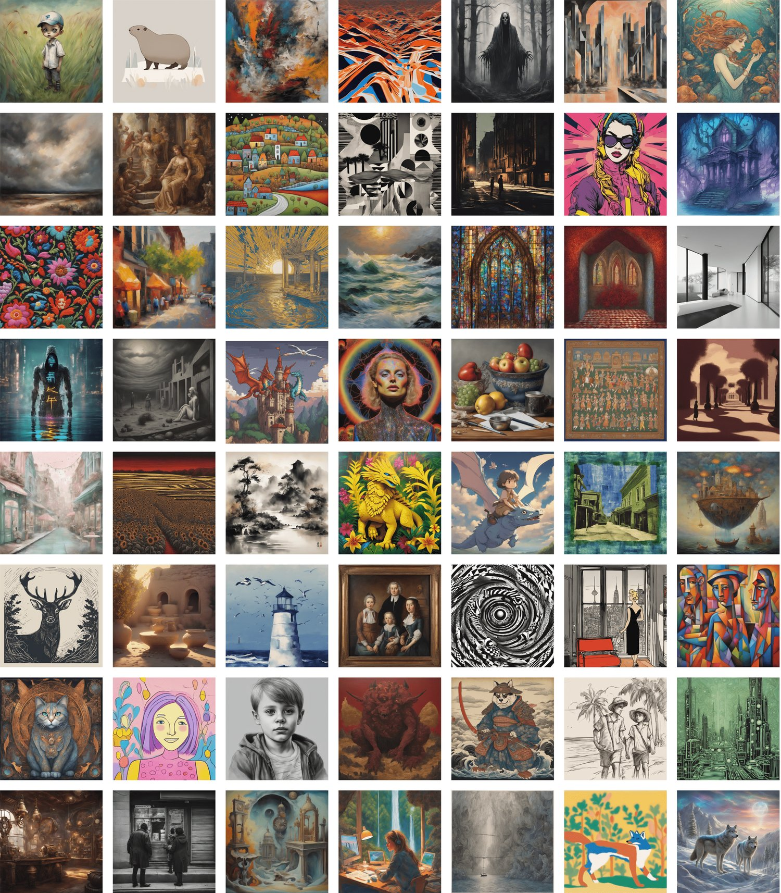
We employ Stable Diffusion XL [28] to generate around 50 images spanning diverse art styles and concepts. To ensure diversity, we first generated approximately 2000 visual attributes using the same method we used for creating our agents’ visual preferences. Next, we used multiple language models, such as Llama 3 [1] and GPT-4 [24], to generate 50 concepts. We then concatenated the visual attributes with these concepts and selected the top 50 unique images generated from them based on CLIP similarity. Finally, we manually included some images that seemed missing from the final set. While acknowledging that art cannot be fully represented by just 50 images, we opted for this smaller set to spare individuals from the burden of choosing from an extensive selection. However, recognizing the limitations in capturing all aspects of art with this limited set, we ask individuals to provide their own images to comment on if our set fails to evoke strong reactions. We show the generated images in fig. 7.
We use the following prompt template to generate comments using GPT4.
The prompt template for fine-tuning is as follows:
The full set of visual attributes is presented on page . In this set, we tried to consider the main features that describe and affect the individual’s perception of image. Some categories include subcategories that contain similar visual attributes. We randomly select several of these attributes for each agent, prioritizing more popular categories such as style, color palette, composition, mood, and medium over movement, depth, lines, etc. This prioritization is done by giving a larger weight to popular categories that we observed mentioned frequently in Lexica’s§§ § lexica.art prompts. The results of 10 sample agents are shown in fig. 8.
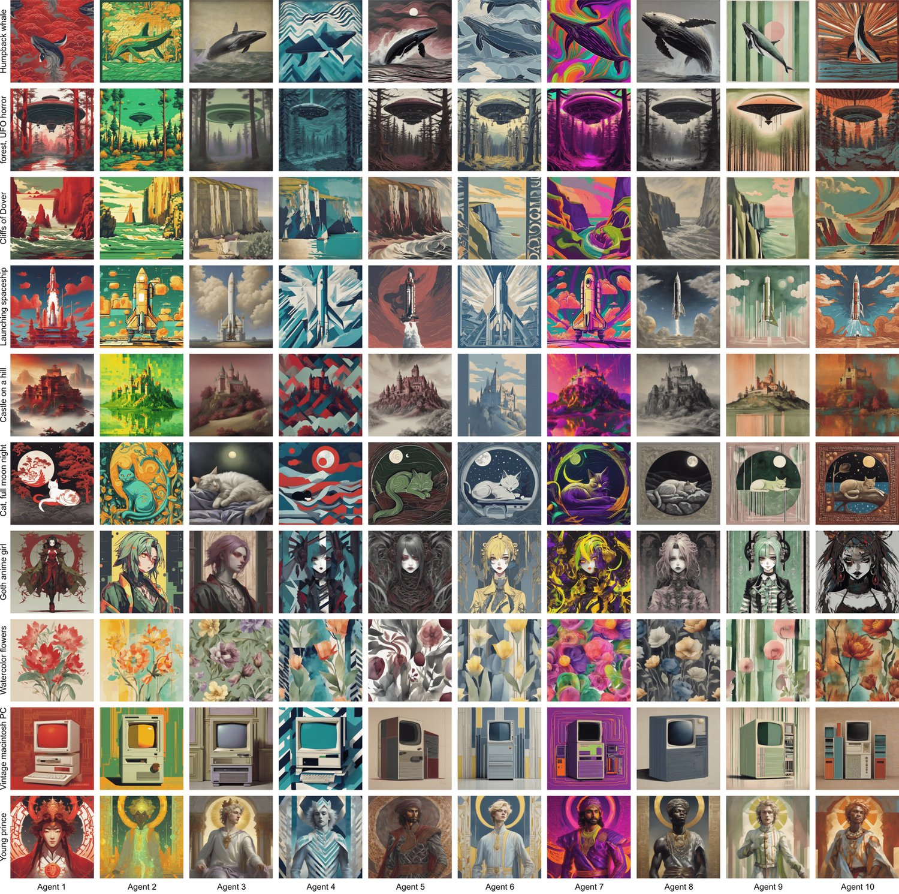
We use GPT4 to generate comments since our initial experiments with the open-source vision-language models, such as IDEFICS2-8b [16, 17], IDEFICS1-80b [16], LLaVA [20, 19], and InstructBLIP [5], hallucinated more often than not. We show some samples in fig. 9. We input the image, and the individual’s preferences, and , to the model with the same comment generation template as the one shown in section A.2.
The sample results of these vision-language models shown in fig. 9 mostly discard the input image’s semantics, vibe, and details, and sometimes even discard the given visual preference. In some extreme cases, we witnessed that LLaVA and InstructBLIP would write captions for the images rather than comments, or simply repeat some of the attributes of the given visual preferences without further context.
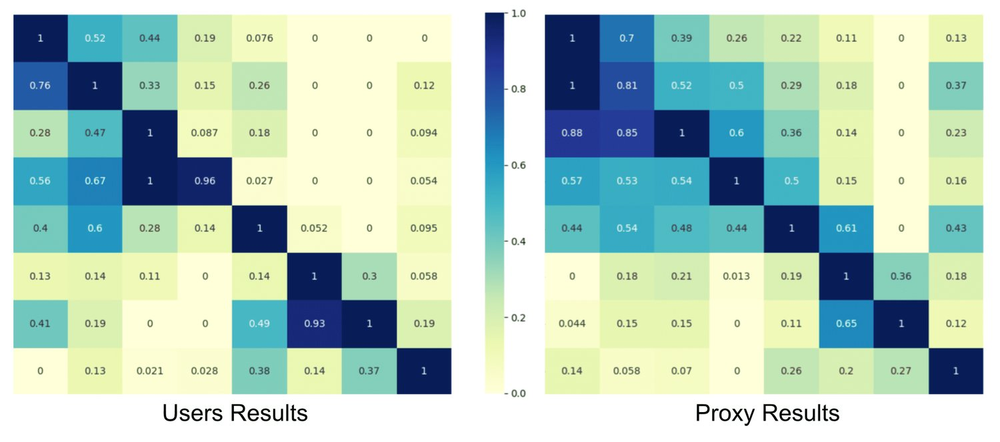
To demonstrate the alignment between users and the proxy metric, we closely examine the User’s vs. Other Users’ Pers test for eight users. We emulate each user’s behavior with our metric by providing with their liked and disliked images. In fig. 10, we present the confusion matrices of the user test alongside the metric’s simulation of the exact same test. Within each confusion matrix, images generated from 15 distinct prompts personalized for the eight users are arranged based on real user rankings, or ’s predictions. Rank 1 indicates that the user (or ) preferred that image over the others, while Rank 8 indicates the user’s (or ’s) least liked image. In most cases, users only ranked from 1 to 4, as they felt indifferent toward the other images present in the test for that prompt. The score in the th row and th column indicates how much user likes the images of user : for each row , a score of is added to the element if user ranks an image of user in the th place (or if ranks it for them). These scores are then averaged over the prompts, and each row of the matrices is normalized. Note how the users’ results are aligned with ’s predictions. On average, both users and ranked their personalized images as the most preferred. It is important to note that achieving 100% alignment between users and is unattainable. This is due to the nuanced nature of users’ choices, which are not solely dependent on personalization factors. For instance, one user selected an image that deviated significantly from their indicated preference. Their rationale for not choosing the personalized image was that "the person in this image is too thin, like she’s starving". These deviations are inherent to Stable Diffusion itself rather than the concept of personalization. is unable to account for such deviations as it is solely tuned to discern users’ preference patterns from their favored and disliked images.
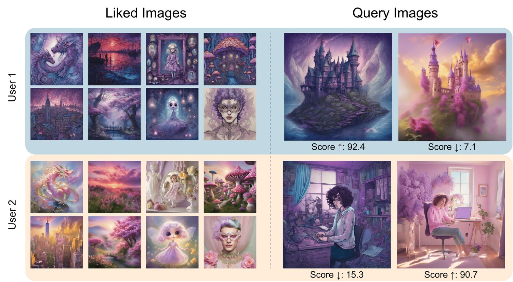
In fig. 11, we demonstrate how a user is represented to by the set of images they like (disliked images are not shown for the sake of simplicity). Notice how assigns a significantly higher score to query images that share the same visual pattern and vibe as the liked images for each user.
To compare the performance of ViPer with other personalization methods, we conducted multiple tests on images personalized for 1000 agents using both Prompt Personalization and ViPer. We use , CLIP similarity, and PickScore [14] to calculate accuracy.
Personalized vs. Non-Personalized Comparison In this experiment, we utilize the proxy metrics to distinguish between agents’ personalized images and random non-personalized images. We anticipate these proxies assigning higher scores to personalized images compared to non-personalized ones. Accuracy is measured as the ratio of correct comparisons to the total number of comparisons. To conduct this test with , for each agent, we input their set of personalized images as liked images and random non-personalized images as disliked images to act as the preference signal. When using CLIP and PickScore, the preference signal becomes the text itself. Subsequently, for each agent, we consider two query images: one personalized and one non-personalized. The proxy metrics are then run on all agents, and alignment between preference signals and query images is calculated. The results are outlined in table 3. It’s notable that ViPer consistently outperforms Prompt Personalization across all three metrics. Despite CLIP and PickScore showing lower accuracy as they are not specifically fine-tuned for this task, their evaluations largely align with ’s.
Prompt-Image Alignment We evaluate the alignment of base prompts and personalized images to determine which personalization method prioritizes results following the users’ input prompts. For each agent, we consider two query images, both personalized. Then, we run CLIP similarity and PickScore on the initial input prompt and the queries. We anticipate that the score will be higher for the personalized image generated from the input prompt compared to the one that is not generated from that input prompt. The results can be seen in table 4. Note how, once again, ViPer outperforms Prompt Personalization.
| CLIP | PickScore | ||
|---|---|---|---|
| Prompt Personalization | 69.5% | 62.4% | 83.9% |
| ViPer | 73.3% | 67.0% | 89.1% |
| CLIP | PickScore | |
|---|---|---|
| Prompt Personalization | 83.5% | 79.6% |
| ViPer | 90.3% | 87.8% |
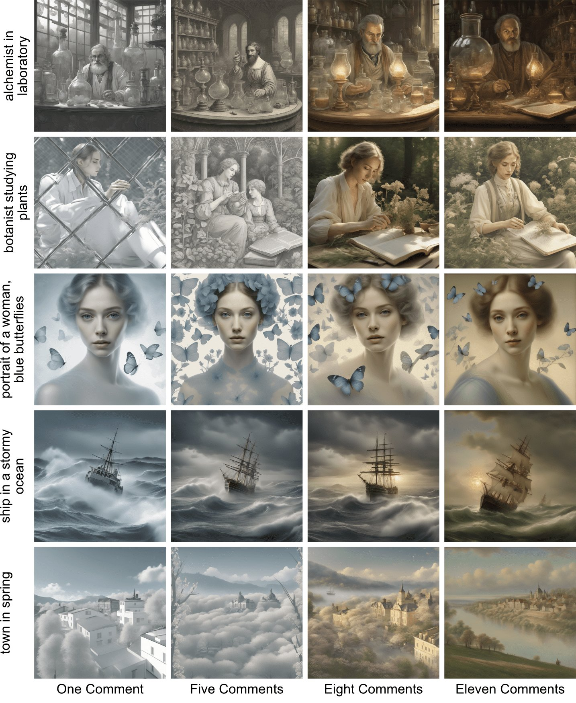
After selecting which images to comment on, individuals are encouraged to discuss their likes or dislikes for each selected image, expressing their perception of it and the emotions it evokes. Importantly, individuals are not bound to any specific writing structure when commenting. They can write as much or as little as they prefer, as we utilize a language model to extract structured preferences from their free-form comments. Ideally, these comments are descriptive, covering most of the attributes present in the images that are important to the individual. We demonstrate that in this case, comments on as few as eight images are enough to obtain personalized results.
Consider a user who has the following visual preference:
Likes: Transparent Texture, Glassy, Delicate, Detailed, Story-telling, Intricate Lines, Smooth Texture, Muted Earthy Colors, Historical, Realistic Lighting, Classicism, Busy Composition, Neo-classicism, Balanced, Open Space, Matte, Depth, Matching Colors, Renaissance, Blending Colors, Subtle Lighting, Ethereal, Atmospheric Perspective, Illusion of Depth, Oil Painting, Creativity, Soft Texture, Romanticism, Desaturated, Majestic, Watercolor
Dislikes: Abstract, Contemporary, Vibrant Colors, Incoherent Shapes, Chaotic Brushstrokes, Simplistic, Blood and Gore, Bright and Blunt Colors, Single-focused, Realism, Flat, Polished, Modern Architecture, Extreme Colors, Monochromatic, Cold Colors, Picasso, Geometric Patterns, Somber, Dark, Dominating Red, Dry Brushstrokes, Monochromatic, Minimalism, Artificial Colors, Color Splash, Photorealistic, Cartoon, Childish
In fig. 12 we randomly select a subset of this user’s comments and extract their visual preferences from them. In the leftmost column, where only one random comment was selected, the results do not exactly align with the user’s preferences in images. As the number of comments increases, they converge towards their general preference for classic art and related visual attributes, and with eight comments, the results are almost perfectly aligned with their taste, though the user still preferred the last column consistently. It is notable that this experiment is also dependent on the random subset chosen. If the user’s selected comment in the first column indicated their extreme preference toward "Classicism", "Renaissance", or "Muted Earthy Colors", etc., the results would have aligned more with their preference. To avoid cases where commenting on an image fails to give us a lot of information about the user, we ask users to provide an average number of eight to ten comments on images that provoke strong reactions from them.
This approach involves modifying prompts using language models based on an individual’s visual preference signal. We instruct the language model to adjust a given prompt based on the provided visual preference text. The objective is to obtain a tailored prompt that, when given to a generative model, can produce a personalized image. This approach serves as a baseline to explore another method of utilizing the signals aside from ViPer’s approach. The input prompt to the language model is as follows:
This method has some shortcomings due to being dependent on a language model. This may lead to lengthy prompts, disregarding parts of visual preferences, and adopting a conversational tone, even against explicit instructions. Additionally, the personalized prompts may fail to include key concepts from the original prompts, e.g., the prompt "Paper clouds, brown origami birds" was transformed into "German Expressionism-inspired clouds float gracefully alongside birds in a sky painted with earthy tones and azure hues. The scene is illuminated by the golden hour, casting a surreal glow over the vibrant landscape. The birds soar amidst dynamic, fragmented clouds, creating a pensive yet lively atmosphere" when using ChatGPT. This resulted in the loss of the instructed materials in the prompt, such as paper and the concept of using origami, as well as the color brown, for the sake of incorporating visual attributes the individual prefers.
We show some of these samples in fig. 13. Each row represents a user’s preference. We can see that ViPer considers the input prompts’ consistently. However, depending on the language model in use, Llama 2-70b or ChatGPT, Prompt Personalization either misses the input prompt or the visual preference. Note that one cannot simply rely on appending the visual preference text to the input prompt, as Stable Diffusion would ignore most parts of the visual preference due to the length of the prompt.
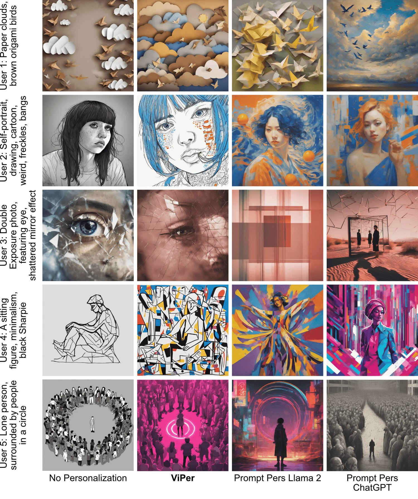
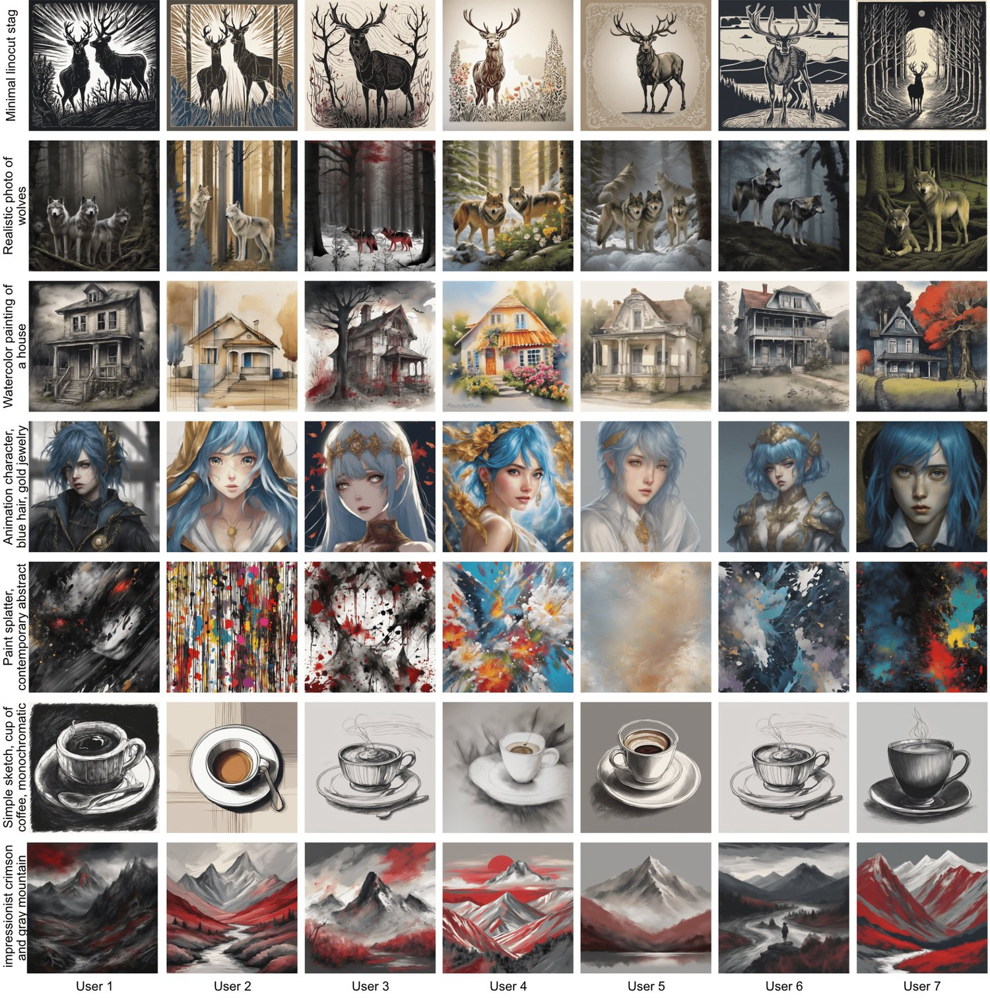
In our tests, input prompts dictate results, with visual preference embeddings limited by to prevent overshadowing prompt embeddings. In fig. 14, we present the results of seven users for seven prompts that explicitly define the art style, medium, or color palette. We can see that even though the results are still personalized and there is a clear preference pattern in each column, they consistently adhere to the input prompt’s meaning. In fig. 15 we compare the baseline results for a single prompt when the style is specified. Note how ZO-RankSGD’s [35] generations are similar to the generations without any personalization. While FABRIC [36] changes the images, the results are not only not personalized but also sometimes lose the prompt’s original style (see row 2 in column 3). Textual Inversion’s [7] results are too vibrant for the user’s taste and lose the prompt’s specified style as well (see row 3 and 4 in column 4). Prompt Personalization misses the "Van Gogh" style but is mostly aligned with the user’s preference. However, ViPer follows both the input prompt’s style and the user’s visual preference. It’s important to note that since the effect of input prompt is more than visual preferences, due to ’s limitation, individuals can generate images with attributes they dislike by mentioning them in the prompt (see row 5 in column 5).
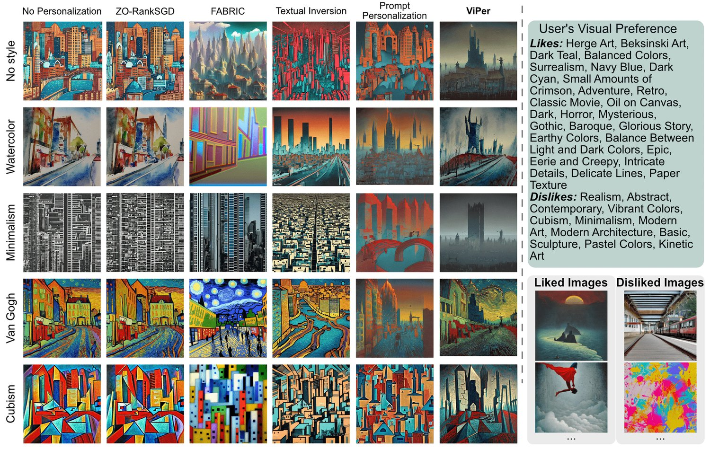
While visual attributes such as color palette and art style are immediately apparent to the eye upon first glance at images, it’s important to note that other visual attributes also exert a significant effect on the results. To analyze this, we create 100 agents within three categories: those without preferred colors, those without preferred art styles, and those without both colors and styles. We then conduct an identifiability test on these agents, using our proxy metric to observe how distinguishable the results are. In this test, we initially generate images based on each agent’s preferences. We then use these generated images as examples of images the agent likes, while selecting random images from other agents’ preferences to represent images the agent doesn’t like. Our expectation is that our proxy will assign higher scores to the images generated specifically for each agent and lower scores to the random images. We show the results of the test in table 5. It’s evident that defining colors or art styles enhances our proxy’s ability to better distinguish between liked and disliked images; however, other visual attributes are also undoubtedly important in this process. We show an individual’s results in fig. 16. Notice how, even without defining specific colors or art styles, the overall pattern of the images remains consistent and all of the generations are personalized.
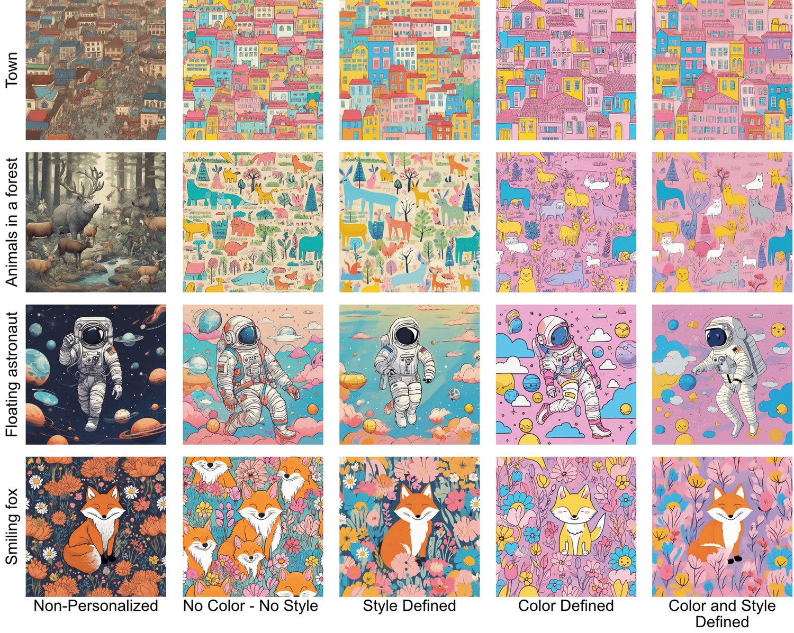
| No Color - No Style | Style Defined | Color Defined | Both defined | Random | |
| Accuracy | 71.6% | 78.8% | 83.1% | 91.4% | 50.0% |
One potential concern is that the proposed system might cause the diversity of outputs to collapse for a particular prompt. To address this, we compared the diversity of outputs from non-personalized and personalized models on the same prompt. ViPer allows users to adjust diversity through the personalization degree, similar to the classifier-free guidance () scale (see Fig. 5 of the main paper). Non-personalized Stable Diffusion tends to produce similar outputs with high scales, indicating a trade-off between prompt-image alignment and diversity. Similarly, ViPer presents a trade-off between diversity and personalization, modifiable by the personalization degree. By adjusting the personalization degree, users can control the balance between the specificity of the personalization and the diversity of the generated outputs. In fig. 17 we show some images generated from different scales and personalization degrees. We can see that as we decrease these hyperparameters, the outputs become less similar.
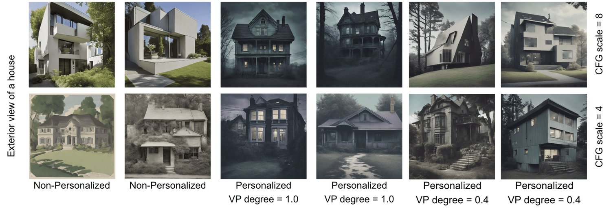
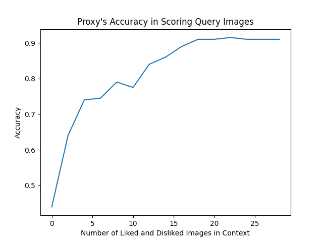
To understand the impact of the number of images (both personalized and non-personalized for each agent) in the input prompt for the proxy, we evaluate the proxy’s ability to distinguish between an agent’s personalized and non-personalized query images. This evaluation involves providing the proxy with a varying number of personalized and non-personalized images (ranging from 0 to 28) as context in the input prompt.
For each agent, we measure accuracy based on whether the proxy assigns a higher score to the personalized query compared to a non-personalized image. In fig. 18, we depict the relationship between accuracy and the number of input images in the context by testing 100 agents. We can see that with fewer input images, the metric’s predictions are closer to random. However, as we increase the number of images in the input prompt, the proxy’s accuracy improves for both test sets, stabilizing at approximately 91.1% accuracy after around 18 images in the context. This indicates that with more data (i.e., more input images), the proxy gains a better understanding of the agents’ visual preferences, resulting in more reliable outcomes.
To align Stable Diffusion to users’ visual preferences, we conducted experiments involving fine-tuning the model based on each individual’s preferences. We used the CLIP similarity score in this experiment, comparing Stable Diffusion-generated outputs for each user against their specified visual preference text to serve as a reward model [40, 4]. In fig. 19, we showcase the outcomes of this approach for four distinct agents, with each row depicting personalized images corresponding to an agent’s visual preference (displayed on the right), and each column containing images generated from the same prompt.
While the results of this approach were promising, it exhibited several shortcomings compared to ViPer. Notably, this method is quite expensive due to the necessity of tuning Stable Diffusion for each user. Moreover, it’s sensitive to over-optimization (reward-hacking)[4], resulting in loss of diversity and collapsing as training steps increase. In severe instances, the tuned model disregards input prompts entirely, only to output the same high-reward images. In milder cases, it generates the same facial features, textures, or extreme patterns, resulting in lower-quality images. Additionally, this method may lead to certain visual attributes being overlooked in favor of emphasizing those that yield higher scores from the reward model.
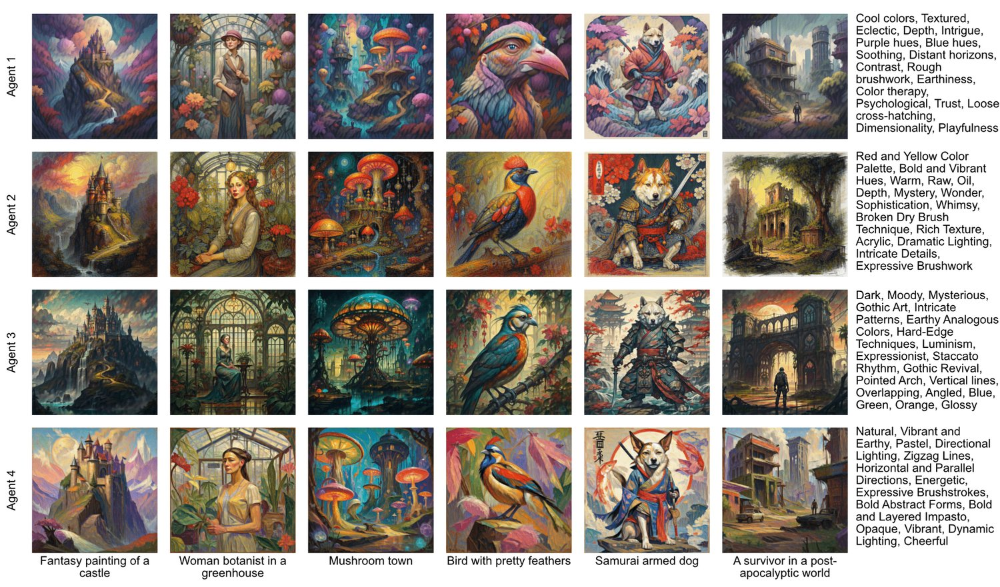
Visual preferences vary widely based on personal experiences and backgrounds. However, current generative models often fail to capture this diversity due to limited training data, resulting in generic outputs. For example, prompts like nostalgia may lean towards Western aesthetics, love often depicts heterosexual monogamous couples, religion incorporates Christian symbols, and human may exclude minority races. Our method addresses these limitations by allowing users to express their preferences thoroughly and in various concepts. In our user tests, some participants favored Queer art and depicted gender nonconforming roles, highlighting the need for more inclusive representation in generative models. Our approach easily incorporates these preferences without requiring additional training data or constant prompt tuning from individuals. Some of these samples are shown for different individuals in fig. 20.
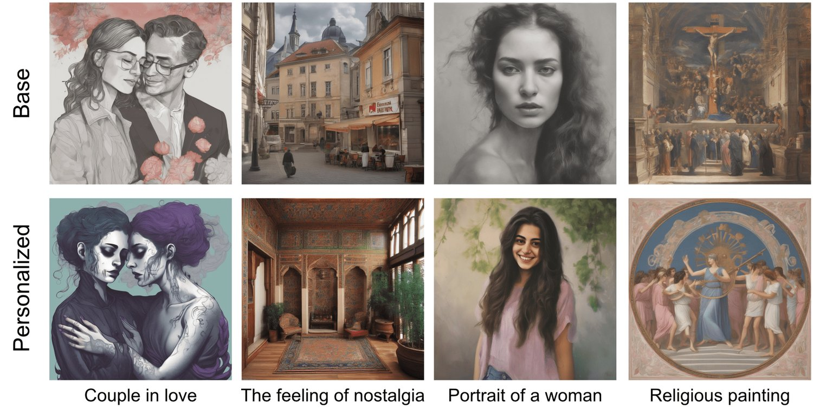
We only use human subjects to evaluate the accuracy of our method and its alignment with actual human preferences. This data contains no identifiable information, and whenever an annotation or a part of a user’s data was solicited, their consent was requested. In table 6, we show the visual preferences of different individuals shown in Fig. 4 of the main paper. The user’s ranking in Fig. 6 of the main paper is presented in fig. 21.
User Likes Dislikes 1 Dark, Edgy, Detailed, Busy Composition, Eye Symbolism, Eerie, Creepy, Soft Brushstrokes, Raw, Unsettling, Surrealism, Chiaroscuro Lighting, Monochromatic, Ominous, Symbolic, Horror, Grey Colors, Illusory, Distorted Perspective, Dramatic, Theatrical, Fluid Lines, Desaturated, Classic Contemporary Abstraction, Cheerful Colors, Colorful, Cartoonish, Anime, Manga, Basic, Hyper-realistic, Minimalism, Bright, Flat, Cubism, Repetitive Patterns, Pops of Color, Vibrant Hues, Art Deco, De Stijl, Pixel Art 2 Realism, Representational, Vibrant, Lighter Colors, Bright, Light and Vivid Shades, Detailed, Cheerful, Positive, Uplifting, Soft, Natural Elements, Organic, Atmospheric Perspective, Hopeful, Harmony, Figure-Ground Relationship, Open Space Composition, Dynamic, Colored Pencil Melancholic, Gore, Muted Colors, Dark Themes, Monochromatic, Graffiti, Bad Painting, Abstract, Ambiguous, Artificial Hues, Grayscale, Fog Lighting, Collage, Linocut, Woodcut, Cyanotype Photography, Black and White, Harsh Lighting 3 Psychological and Emotional Depth, Queer Art, Sketch Lines, Dark Themes, Magical, Gloomy, Melancholy, Various Color Palettes, Eerie Vibes, Melancholic, Hand-drawn Textures, Dramatic Lighting, Storytelling, Gothic, Surrealism, Expressionism, Fantastical Elements, Somber Colors, Complex Composition, Innovative, Intricacy, Wonder, Fluid, Freehand Lines, Purples and Blues Realism, Cheerful Colors, Vibrant, Minimalism, Contemporary Abstract, Yellow Hues, Direct Lighting, Monochromatic, Black and white, Grayscale, Static, Lyrical Abstraction, Art Informel, Naive, Rough Texture, Strict, Straight and Thin Lines, Photography, 3D 4 Minimalist, Abstract, Simple Compositions, Room for Interpretation, Limited Color Palettes, Flat, Subtlety, Open Spaces, Muted Colors, Desaturated Palettes, Monochromatic, Complementary Colors, Aqueous Texture, Washed Out, Soothing, Subtle Texture, Contemporary Abstraction, Buttercream Hues, Harmonious, Compressed, Measured Detailed, Busy Composition, Vibrant Colors, Realism, Baroque, Neo-Impressionism, Vivid, Complex, Intricate details, Mechanical Lines, High Contrast, Chaotic, Maximalist Juxtaposition